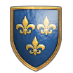
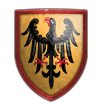
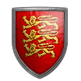
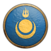
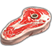
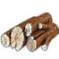
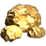
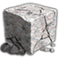

Mikä on Age of Empires 2?
Age of Empires II (AoE2), on klassikko strategia peli vuodelta 1999. Sen kehitti silloinen Ensamble Studios, ja julkaisi Microsoft. Kuten nimestä käy ilmi, peli on seuraaja aikaisemmalle pelille, Age of Empires, 1997. Peli on reaaliaikainen strategiapeli (RTS, Real-Time Strategy), eli pelaajat toimivat samanaikaisesti ilman vuoroja, ja pelin sisältö on jatkuvassa vuorovaikutuksessa keskenään.
Pelin näkymä käyttää ortografista projektiota, tai isometristä näkymää. Pelistä puutuu siis syvyysvaikutelma. Teknisesti pelin grafiikka on tuotettu 2D-spriteina, eli 3D-mallit ja niiden animaatiot on renderöity kuviksi tai kuvasarjoiksi, jotka sitten animoidaan 2-ulotteisina kuvina. Nämä tekevät pelistä selkeästi luettavan, mutta hankaloittavat myös pelaamista tietyissä rajatapauksissa.
Vaikka AoE2:ssa on paljon yhtäläisyyksiä edeltäjäänsä, ne eroavat kuitenkin teemaltaan varsin olennaisesti. Ensimmäinen Age of Empires -peli sijoittuu entisaikaan, jossa siirrytään aikakausien läpi, kivikaudesta työkalukauteen, siitä pronssikauteen, ja lopulta rautakauteen. Age of Empires II taas sijoittuu karkeasti keskiaikaan, jossa lähdetään liikkeelle pimeästä aikakaudesta, ja siirrytään feodaaliajan läpi linnojen aikakaudelle, ja lopulta keisarilliselle aikakaudelle, jossa ensimmäiset ruutiaseet alkoivat ilmestyä.
Pelin Idea
 Pimeä Aika
Pimeä Aika
(Dark Age) Feodaali Aika
Feodaali Aika
(Feudal Age) Linnojen Aika
Linnojen Aika
(Castle Age) Keisarillinen Aika
Keisarillinen Aika
(Imperial Age)
Peliä voidaan pelata monin eri tavoin, mutta perusperiaate on monesti, että lähdetään liikkeelle vaatimattomista oloista. Pelaajat aloittavat keskellä villiä luontoa, jossa heillä on kourallinen kyläläisiä, pieni alkupääoma resursseja, kylän keskus -rakennus, sekä tiedusteluyksikkö, jolla tutkia tehokkaammin ympäristöä.
Tarkoituksena on kasvattaa omaa imperiumia tutkimalla ympäristöä ja keräämällä lisää resursseja, ja lopulta kukistaa vastustajat, johon voi olla useita eri keinoja. Resursseilla voidaan rakentaa uusia rakennuksia, kouluttaa yksiköitä, kuten uusia kyläläisiä tai sotajoukkoja, sekä kehittää teknologioita ja siirtyä aikakausilla eteenpäin. Uudet aikakaudet avaavat uusia teknologioita ja yksiköitä, ollen näin oleellinen osa pelin kulkua.
Kartat ja Tutkiminen
Pelialue on jaettu ruudukkoon, joka vaihtelee valitun koon mukaan. Pelin kartat on usein luotu erilaisilla skripteillä, joiden parametrien perusteella voidaan luoda tuhansia variaatioita samasta karttamallista. Pelialue on useimmiten alussa tutkimaton, mikä esitetään mustina ruutuina. Pelaajan yksiköt ja rakennukset näkevät tietyille etäisyyksille ympärillään, ja pystyvät näin tutkimaan karttaa. Kun uusi alue on tutkittu, se jää pysyvästi näkyviin. Tosin, mikäli aluetta ei aktiivisesti nähdä, se jää ”sodan sumun” (fog of war) peittoon. Sumussa olevia vihollisia ei nähdä, eikä myöskään mahdollisia muutoksia, kuten resurssien loppumista, tai uusien rakennusten rakentamista.
Sivilisaatiot

Frankit
Teutonit
Britit
Mongolit
Pelaajat valitsevat itselleen haluamansa sivilisaation, joka perustuu johonkin historialliseen osapuoleen, kuten frankit, mongolit tai teutonit. Jokaisella sivilisaatiolla on omat vahvuutensa ja heikkoutensa. Pelissä on teknologia puu, josta jokaisella sivilisaatiolla on puutteensa. Sivilisaatioilla on myös omia erityisominaisuuksia, jotka mahdollistavat ja tukevat tiettyjen strategioiden suorittamista. Esimerkiksi hunnit eivät tarvitse lainkaan asumuksia, ja saavat alennuksen ratsujousimiesten kouluttamiseen.
Jokaisella sivilisaatiolla on myös oma uniikkiyksikkö, joka on saatavilla vain kyseiselle sivilisaatiolle. Näillä on yleensä jonkinlainen ainutlaatuinen kyky tai ominaisuus. Esimerkiksi mongoleilla on uniikki-ratsujousimies - Mangudai - jolla tekee lisävahinkoa piiritysaseisiin, kuten muurinmurtajiin ja katapultteihin.
Resurssit

Ruoka
Puu
Kulta
Kivi
Pelissä on 4 resurssia, joita kyläläiset voivat kerätä ympäristöstä. Resursseilla voi olla eri lähteitä, esimerkiksi kalastaminen tai metsästäminen. Pelaajat voivat saada resursseja myös käymällä kauppaa, tai keräämällä pyhäinjäännöksiä (relics), jotka luostariin asetettuna tuovat lisätuloja. Tietyissä pelimuodoissa myös jotkin rakennukset voivat tuottaa resursseja, niin kauan kuin ne ovat pelaajan hallussa.
Ruokaa, puuta ja kultaa käytetään yksiköiden kouluttamiseen ja teknologioiden kehittämiseen. Puuta käytetään myös runsaasti rakennusten rakentamiseen. Kallisarvoista kiveä käytetään suhteellisesti vähemmän, ja lähinnä puolustusrakennusten, kuten muurien ja linnojen rakentamiseen.
Resurssiksi voitaisiin ehkä luokitella myös populaatio-tila (population space). Yksiköt tarvitsevat itselleen tilan, eli jonkun asutuksen, jotta ne voidaan kouluttaa. Tilan lisääminen tapahtuu tyypillisesti rakentamalla taloja tai linnoja.